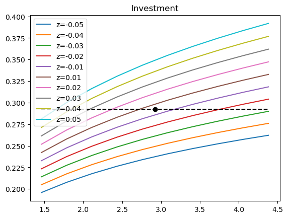

from dataclasses import dataclass
from math import exp, sqrt
import numpy as np
from typing import Any, Tuple
import numpy.typing as npt
Vector = npt.NDArray[1]
Matrix = npt.NDArray[2]
Tensor3 = npt.NDArray[3]Neoclassical model with time iteration
Our goal in this tutorial will be to solve numerically the neoclassical model using the time-iteration algorithms in two ways:
- with a naive iterative algorithm
- with a vectorized one (using numpy)
Remark: this tutorial uses typehints as a way to help structure the code. They can safely be ignored.
The neoclassical model
The representative agent maximizes intertemporal discounted utility of consumption \[\sum_{t\geq0} \beta^t U(c_t)\] where \(U(c_t)=\frac{(c_t)^{1-\gamma}}{1-\gamma}\).
Production is \[y_t=exp(z_t) k_t^{\alpha}\] where \(k_t\) is the amount of capital and \(z_t=\rho z_{t-1} + \epsilon_t\) and AR1 process with \((\epsilon_t)\) a normal innovation of standard deviation \(\sigma\).
The law of motion for the capital depends on investment \(i_t\) and capital depreciation \(\delta\):
\[k_t = (1-\delta) k_{t-1} + i_{t-1}\]
The first order condition corresponding to the optimization problem is:
\[E_t \left[ \beta \underbrace{ \frac{U^{\prime}(c_{t+1})}{U^{\prime}(c_t)})\left( 1- \delta + \alpha exp(z_{t+1}) k_{t+1}^{\alpha-1} \right) -1 }_{f}\right] =0\]
Exercise 1 What are the states of the problems? the controls? the exogenous shocks?
# states: (z,k)
# controls: (i,)
# everything else can be computed from it
# auxiliary: (y,c)
# shocks: (epsilon,)
# paramaters: alpha,beta,gamma,delta,sigma,rhoExercise 2 Define an object to represent the model calibration (you can use a dataclass).
from dataclasses import dataclass
@dataclass
class Neoclassical:
alpha = 0.3
beta = 0.96
gamma = 4.0
delta = 0.1
rho = 0.9
sigma = 0.01
# def __getitem__(self, name):
# return self.__getattribute__(name)m = Neoclassical()m.alpha0.3Exercise 3 Define a function to compute the steady-state controls and states.
def steady_state(m: Neoclassical) -> Tuple[ Tuple[float, float], Tuple[float]]:
z:float = 0.0
k:float = ((1/m.beta-(1-m.delta))/m.alpha)**(1/(m.alpha-1))
i = k*m.delta
s = (z,k) # tuple of states
x = (i,) #tuple of controls
return (s,x)s,x = steady_state(m)x(0.29208221499640713,)Naive solution
Exercise 4 Define a cartesian grid on productivity and capital:
def get_grid(m: Neoclassical, size: Tuple[int, int]) -> Tuple[ Vector, Vector]:
s,x = steady_state(m)
sigma_e = m.sigma/sqrt(1-m.rho**2)
kbar = s[1] # steady state value of capital
zvec = np.linspace( -2*sigma_e, 2*sigma_e, size[0])
kvec = np.linspace(0.5*kbar,kbar*1.5,size[1])
return (zvec, kvec)
grid = get_grid(m, (10,10))grid(array([-0.04588315, -0.03568689, -0.02549064, -0.01529438, -0.00509813,
0.00509813, 0.01529438, 0.02549064, 0.03568689, 0.04588315]),
array([1.46041107, 1.78494687, 2.10948266, 2.43401846, 2.75855425,
3.08309005, 3.40762584, 3.73216164, 4.05669743, 4.38123322]))Exercise 5 Define an initial guess representing the values of the controls on the grid
N_1, N_2 = (10,10)
x0 = np.zeros( (N_1, N_2, 1) )
x0[:, :, 0] = x
x0;def initial_guess(m: Neoclassical, grid)->npt.NDArray[3]:
s,x = steady_state(m)
N_1 = len(grid[0])
N_2 = len(grid[1])
x0 = np.zeros( (N_1, N_2, 1) )
x0[:, :, 0] = x
return x0;
# x0 = 3-dimensional array of size
x0 = initial_guess(m, grid)
x0array([[[0.29208221],
[0.29208221],
[0.29208221],
[0.29208221],
[0.29208221],
[0.29208221],
[0.29208221],
[0.29208221],
[0.29208221],
[0.29208221]],
[[0.29208221],
[0.29208221],
[0.29208221],
[0.29208221],
[0.29208221],
[0.29208221],
[0.29208221],
[0.29208221],
[0.29208221],
[0.29208221]],
[[0.29208221],
[0.29208221],
[0.29208221],
[0.29208221],
[0.29208221],
[0.29208221],
[0.29208221],
[0.29208221],
[0.29208221],
[0.29208221]],
[[0.29208221],
[0.29208221],
[0.29208221],
[0.29208221],
[0.29208221],
[0.29208221],
[0.29208221],
[0.29208221],
[0.29208221],
[0.29208221]],
[[0.29208221],
[0.29208221],
[0.29208221],
[0.29208221],
[0.29208221],
[0.29208221],
[0.29208221],
[0.29208221],
[0.29208221],
[0.29208221]],
[[0.29208221],
[0.29208221],
[0.29208221],
[0.29208221],
[0.29208221],
[0.29208221],
[0.29208221],
[0.29208221],
[0.29208221],
[0.29208221]],
[[0.29208221],
[0.29208221],
[0.29208221],
[0.29208221],
[0.29208221],
[0.29208221],
[0.29208221],
[0.29208221],
[0.29208221],
[0.29208221]],
[[0.29208221],
[0.29208221],
[0.29208221],
[0.29208221],
[0.29208221],
[0.29208221],
[0.29208221],
[0.29208221],
[0.29208221],
[0.29208221]],
[[0.29208221],
[0.29208221],
[0.29208221],
[0.29208221],
[0.29208221],
[0.29208221],
[0.29208221],
[0.29208221],
[0.29208221],
[0.29208221]],
[[0.29208221],
[0.29208221],
[0.29208221],
[0.29208221],
[0.29208221],
[0.29208221],
[0.29208221],
[0.29208221],
[0.29208221],
[0.29208221]]])Exercise 6 Define a decision rule which interpolates the initial guess on any state
from scipy.interpolate import RegularGridInterpolator
RegularGridInterpolator(grid, x0)([0.001, 2.0])array([[0.29208221]])def phi(grid, s, x0):
return RegularGridInterpolator(grid, x0)(s)phi(grid,[0.01, 2], x0)array([[0.29208221]])# Note that with the same decision rule, it is possible to interpolate at many differenc state at once
# instead of one vector ([0.01, 2]), just pass a matrix, where each row corresponds to a state to interpolate at phi(
grid,
np.array([
[0.01, 2.2],
[0.02, 2.4]
]),
x0
)
# The result is also a matrix, with each line corresponding to a vector of controlsarray([[0.29208221],
[0.29208221]])Exercise 7 Compute the euler residual, for a given realization of the exogenous shocks.
def f(m: Neoclassical, s: Tuple[float,float], x:Tuple[float], E: Tuple[float], grid, theta):
## grid is the discretized grid from before
## theta contains the values of the controls on the grid
# extract some values
z = s[0]
k = s[1]
# z,k = s # (equivalent)
i = x[0]
Epsilon = E[0]
### Coputing auxiliary variables
y = exp(z)*k**m.alpha
c = y - i
### computing the transitions
# upper case for variables tomorrow
Z = (1-m.rho)*z + Epsilon
K = (1-m.delta)*k + i
# state tomorrow
S = (Z,K)
#compute controls tomorrow
X = phi(grid,S,theta)
I = X[0]
### Coputing auxiliary variables
Y = exp(Z)*K**m.alpha
C = Y - I
r = m.beta*(C/c)**(-m.gamma)*(1-m.delta+m.alpha*Y/K) - 1
return rf(m, s, x, (0.0,), grid, x0) # 0 consistent with the steady-state0.0Exercise 8 Compute the expected euler residuals, integrating over all possible realizations of the exogenous shocks.
# compute the gauss-hermite quadratures
from numpy.polynomial.hermite_e import hermegauss
nodes, weights = hermegauss(5)nodes = nodes*m.sigmafrom math import pidef F(m: Neoclassical, s: Tuple[float,float], x:Tuple[float], grid, theta, discr:Tuple[Vector, Vector]):
## grid is the discretized grid from before
## theta contains the values of the controls on the grid
## discr contains the weights w,x of the gaussian quadrature
nodes, w = discr
r = 0.0
for i in range(len(w)):
E = (nodes[i],)
r += w[i]*f(m, s, x, E, grid, theta)
return r / 2/piF(m, s, x, grid, x0, (nodes, weights))0.000516479436097674Exercise 9 At the steady-state, find the optimal control, assuming future decisions are taken according to the initial guess.
from scipy.optimize import root
sol = root(lambda u: F(m, s, u, grid, x0, (nodes, weights)), x)sol message: The solution converged.
success: True
status: 1
fun: 2.234256836783291e-16
x: [ 2.924e-01]
method: hybr
nfev: 7
fjac: [[-1.000e+00]]
r: [ 1.689e+00]
qtf: [-1.462e-10]sol.xarray([0.29238782])Exercise 10 Solve for the optimal controls over the whole grid, still assuming future decisions are taken according to the initial guess.
# compute optimal controls for the whole grid
# store the results in x1
x1 = x0.copy()
# iterate over z grid
for (i,z) in enumerate(grid[0]):
# iterate over k grid
for (j,k) in enumerate(grid[1]):
s = (z,k)
x_ = x0[i,j,:] # initial guess (a vector, same as x0[i,j,:]
sol = root(lambda u: F(m, s, u, grid, x0, (nodes, weights)), x)
x1[i,j,:] = sol.xExercise 11 Implement the time iteration algorithm.
import tqdmfrom tqdm.notebook import tqdmdef time_iteration(m: Neoclassical, grid, discr, x0, T=100, tol_η=1e-9):
η_0 = 1.0
for t in tqdm(range(T)):
x1 = x0.copy()
#### solve for optimal controls on the grid
# iterate over z grid
for (i,z) in enumerate(grid[0]):
# iterate over k grid
for (j,k) in enumerate(grid[1]):
s = (z,k)
x_ = x0[i,j,:] # initial guess
sol = root(lambda u: F(m, s, u, grid, x0, (nodes, weights)), x)
x1[i,j,:] = sol.x
####
# compute successive approximation
η = abs(x1 - x0).max()
lam = η/η_0
η_0 = η
print(t, η, lam)
if η < tol_η:
return x1
# new guess x1 has been computed
# it becomes the desicion rule tomorrow
x0 = x1sol_0 = time_iteration(m, grid, (nodes, weights), x0)0 0.06486986070327466 0.06486986070327466
1 0.013682471767716559 0.21092186139110763
2 0.007885248417782598 0.5763029189205154
3 0.005600051869293132 0.7101934615863271
4 0.004146448587327267 0.7404303895939902
5 0.003118157361899604 0.7520067586101477
6 0.0023690151568057094 0.759748428912673
7 0.0018145128836273283 0.7659355316552507
8 0.0013992317113427077 0.7711335223729872
9 0.001179997908225372 0.8433184430140179
10 0.0009952766943504 0.8434563209075693
11 0.0008391434661446096 0.8431258070322888
12 0.0007071880227255689 0.842749841066747
13 0.0005956878172918012 0.8423330120834973
14 0.0005014981279138908 0.8418807861370597
15 0.0004219599808663044 0.8413989153290649
16 0.0003548232149503394 0.8408930491983388
17 0.00029818224990529885 0.8403684915233972
18 0.000250422416285756 0.839830058178476
19 0.0002101750274467462 0.8392820042392544
20 0.00017627967994282567 0.8387279977279466
21 0.0001477525374767863 0.8381711240042423
22 0.00012375958056864977 0.8376139095959275
23 0.0001035939912359396 0.8370583575020742
24 8.665699403376248e-05 0.8365059884255024
25 7.244159738384326e-05 0.8359578842028521
26 6.051877756674262e-05 0.8354147306563977
27 5.0525726886463396e-05 0.8348768583559297
28 4.2155851216696405e-05 0.8343442799234738
29 3.515025374134506e-05 0.8338167235826879
30 2.929048366073772e-05 0.8332936620108987
31 2.439236311391202e-05 0.832774337100095
32 2.0300733968192652e-05 0.8322577797562495
33 1.688498983498654e-05 0.8317428257245316
34 1.4035278462942724e-05 0.8312281262888845
35 1.1659276427322673e-05 0.8307121556659245
36 9.679452159405688e-06 0.8301932130816103
37 8.030745473841527e-06 0.8296694215320767
38 6.658602035802819e-06 0.8291387216157978
39 5.517310067593151e-06 0.8285988617320837
40 4.568594160425654e-06 0.8280473825932062
41 3.780427595467817e-06 0.8274815977779029
42 3.126030170608196e-06 0.8268985694517339
43 2.5830233338353104e-06 0.8262950748593578
44 2.1327186016661948e-06 0.8256675709156306
45 1.759518749089306e-06 0.8250121453972761
46 1.4504143475146947e-06 0.8243244627347119
47 1.1945608171526345e-06 0.8235996970103965
48 9.82923400505431e-07 0.8228324471987418
49 8.079793970550142e-07 0.8220166460983038
50 6.634685909001625e-07 0.8211454318246532
51 5.441842440001565e-07 0.8202110114388886
52 4.457981672700839e-07 0.8192044738251475
53 3.647144240503941e-07 0.818115575224952
54 2.979470522523897e-07 0.8169324616873972
55 2.430179260048959e-07 0.8156413166962176
56 1.97871498852642e-07 0.8142259384135128
57 1.6080366865844908e-07 0.8126671581853336
58 1.304024693782324e-07 0.8109421287844523
59 1.0549864665199138e-07 0.8090233808839349
60 8.51244872923651e-08 0.8068775287057989
61 6.847955280608886e-08 0.8044636153976679
62 5.490216598014186e-08 0.8017307901470442
63 4.3845697017541596e-08 0.7986150679993319
64 3.4858856079456046e-08 0.7950348255499249
65 2.7569316329856264e-08 0.7908841376497191
66 2.167011992071366e-08 0.7860231157508228
67 1.690838996593058e-08 0.7802628701546077
68 1.3075968863240917e-08 0.7733420443689926
69 1.0001656058911124e-08 0.7648883355043554
70 7.544774194290227e-09 0.7543524942120059
71 6.338538832695306e-09 0.8401230665713254
72 5.499929150998284e-09 0.8676966878594599
73 4.778501316859973e-09 0.8688296131946781
74 4.1569779007932794e-09 0.869933400693273
75 3.6207527531750827e-09 0.8710060143654196
76 3.1593596627743636e-09 0.8725698433851585
77 2.785519093162492e-09 0.8816720444915768
78 2.459322190340174e-09 0.8828954704984716
79 2.1725847787479324e-09 0.8834079517037253
80 1.9203295620329186e-09 0.8838916579078726
81 1.6985449990958301e-09 0.8845070308128253
82 1.520061576609777e-09 0.8949198151470443
83 1.360651424864301e-09 0.895129148582907
84 1.2175115915447066e-09 0.8948005119431159
85 1.0890616186642887e-09 0.8944979466540864
86 9.738615469601086e-10 0.8942207954720959Exercise 12 Time the result (and profile).
# Simple timing can obtained using the jupyter magic command %time%time time_iteration(m, grid, (nodes, weights), x0)0 0.06486986070327466 0.06486986070327466
1 0.013682471767716559 0.21092186139110763
2 0.007885248417782598 0.5763029189205154
3 0.005600051869293132 0.7101934615863271
4 0.004146448587327267 0.7404303895939902
5 0.003118157361899604 0.7520067586101477
6 0.0023690151568057094 0.759748428912673
7 0.0018145128836273283 0.7659355316552507
8 0.0013992317113427077 0.7711335223729872
9 0.001179997908225372 0.8433184430140179
10 0.0009952766943504 0.8434563209075693
11 0.0008391434661446096 0.8431258070322888
12 0.0007071880227255689 0.842749841066747
13 0.0005956878172918012 0.8423330120834973
14 0.0005014981279138908 0.8418807861370597
15 0.0004219599808663044 0.8413989153290649
16 0.0003548232149503394 0.8408930491983388
17 0.00029818224990529885 0.8403684915233972
18 0.000250422416285756 0.839830058178476
19 0.0002101750274467462 0.8392820042392544
20 0.00017627967994282567 0.8387279977279466
21 0.0001477525374767863 0.8381711240042423
22 0.00012375958056864977 0.8376139095959275
23 0.0001035939912359396 0.8370583575020742
24 8.665699403376248e-05 0.8365059884255024
25 7.244159738384326e-05 0.8359578842028521
26 6.051877756674262e-05 0.8354147306563977
27 5.0525726886463396e-05 0.8348768583559297
28 4.2155851216696405e-05 0.8343442799234738
29 3.515025374134506e-05 0.8338167235826879
30 2.929048366073772e-05 0.8332936620108987
31 2.439236311391202e-05 0.832774337100095
32 2.0300733968192652e-05 0.8322577797562495
33 1.688498983498654e-05 0.8317428257245316
34 1.4035278462942724e-05 0.8312281262888845
35 1.1659276427322673e-05 0.8307121556659245
36 9.679452159405688e-06 0.8301932130816103
37 8.030745473841527e-06 0.8296694215320767
38 6.658602035802819e-06 0.8291387216157978
39 5.517310067593151e-06 0.8285988617320837
40 4.568594160425654e-06 0.8280473825932062
41 3.780427595467817e-06 0.8274815977779029
42 3.126030170608196e-06 0.8268985694517339
43 2.5830233338353104e-06 0.8262950748593578
44 2.1327186016661948e-06 0.8256675709156306
45 1.759518749089306e-06 0.8250121453972761
46 1.4504143475146947e-06 0.8243244627347119
47 1.1945608171526345e-06 0.8235996970103965
48 9.82923400505431e-07 0.8228324471987418
49 8.079793970550142e-07 0.8220166460983038
50 6.634685909001625e-07 0.8211454318246532
51 5.441842440001565e-07 0.8202110114388886
52 4.457981672700839e-07 0.8192044738251475
53 3.647144240503941e-07 0.818115575224952
54 2.979470522523897e-07 0.8169324616873972
55 2.430179260048959e-07 0.8156413166962176
56 1.97871498852642e-07 0.8142259384135128
57 1.6080366865844908e-07 0.8126671581853336
58 1.304024693782324e-07 0.8109421287844523
59 1.0549864665199138e-07 0.8090233808839349
60 8.51244872923651e-08 0.8068775287057989
61 6.847955280608886e-08 0.8044636153976679
62 5.490216598014186e-08 0.8017307901470442
63 4.3845697017541596e-08 0.7986150679993319
64 3.4858856079456046e-08 0.7950348255499249
65 2.7569316329856264e-08 0.7908841376497191
66 2.167011992071366e-08 0.7860231157508228
67 1.690838996593058e-08 0.7802628701546077
68 1.3075968863240917e-08 0.7733420443689926
69 1.0001656058911124e-08 0.7648883355043554
70 7.544774194290227e-09 0.7543524942120059
71 6.338538832695306e-09 0.8401230665713254
72 5.499929150998284e-09 0.8676966878594599
73 4.778501316859973e-09 0.8688296131946781
74 4.1569779007932794e-09 0.869933400693273
75 3.6207527531750827e-09 0.8710060143654196
76 3.1593596627743636e-09 0.8725698433851585
77 2.785519093162492e-09 0.8816720444915768
78 2.459322190340174e-09 0.8828954704984716
79 2.1725847787479324e-09 0.8834079517037253
80 1.9203295620329186e-09 0.8838916579078726
81 1.6985449990958301e-09 0.8845070308128253
82 1.520061576609777e-09 0.8949198151470443
83 1.360651424864301e-09 0.895129148582907
84 1.2175115915447066e-09 0.8948005119431159
85 1.0890616186642887e-09 0.8944979466540864
86 9.738615469601086e-10 0.8942207954720959
CPU times: user 48.5 s, sys: 323 ms, total: 48.8 s
Wall time: 48.4 sarray([[[0.19583622],
[0.2076613 ],
[0.21768851],
[0.22633985],
[0.23396406],
[0.24072713],
[0.24680396],
[0.2523479 ],
[0.25745886],
[0.26220283]],
[[0.20490056],
[0.21748788],
[0.22818253],
[0.23746723],
[0.24562589],
[0.2528781 ],
[0.25940874],
[0.26537834],
[0.27088947],
[0.27601117]],
[[0.21406612],
[0.22742242],
[0.23879048],
[0.24869653],
[0.2574127 ],
[0.2651586 ],
[0.27214709],
[0.2785463 ],
[0.28446136],
[0.28996436]],
[[0.22333449],
[0.23746658],
[0.24951411],
[0.26002677],
[0.26932633],
[0.27757057],
[0.28502102],
[0.29185385],
[0.29817666],
[0.30406457]],
[[0.23270796],
[0.24762282],
[0.26035601],
[0.27148088],
[0.28135277],
[0.29011697],
[0.29803358],
[0.30530415],
[0.3120386 ],
[0.31831512]],
[[0.24218617],
[0.25789069],
[0.27131566],
[0.2830583 ],
[0.29348803],
[0.30279716],
[0.31118405],
[0.31889643],
[0.32604638],
[0.33271517]],
[[0.25177031],
[0.26827144],
[0.28239438],
[0.29476039],
[0.30575318],
[0.31559467],
[0.32447394],
[0.33263222],
[0.34020156],
[0.34726632]],
[[0.26146323],
[0.27876812],
[0.29359538],
[0.3065905 ],
[0.3181517 ],
[0.32851664],
[0.33790702],
[0.34651543],
[0.35450817],
[0.3619727 ]],
[[0.27126501],
[0.28938077],
[0.30491867],
[0.31854864],
[0.33068357],
[0.34157664],
[0.3514631 ],
[0.36054596],
[0.3689661 ],
[0.37683418]],
[[0.2811765 ],
[0.30011027],
[0.31636514],
[0.33063571],
[0.34334973],
[0.35477566],
[0.3651574 ],
[0.37472245],
[0.38357635],
[0.39185178]]])# one can also profile performance using %prun
# to sort the results by cumulative time add optiton =s time%prun -s time time_iteration(m, grid, (nodes, weights), x0)0 0.06486986070327466 0.06486986070327466
1 0.013682471767716559 0.21092186139110763
2 0.007885248417782598 0.5763029189205154
3 0.005600051869293132 0.7101934615863271
4 0.004146448587327267 0.7404303895939902
5 0.003118157361899604 0.7520067586101477
6 0.0023690151568057094 0.759748428912673
7 0.0018145128836273283 0.7659355316552507
8 0.0013992317113427077 0.7711335223729872
9 0.001179997908225372 0.8433184430140179
10 0.0009952766943504 0.8434563209075693
11 0.0008391434661446096 0.8431258070322888
12 0.0007071880227255689 0.842749841066747
13 0.0005956878172918012 0.8423330120834973
14 0.0005014981279138908 0.8418807861370597
15 0.0004219599808663044 0.8413989153290649
16 0.0003548232149503394 0.8408930491983388
17 0.00029818224990529885 0.8403684915233972
18 0.000250422416285756 0.839830058178476
19 0.0002101750274467462 0.8392820042392544
20 0.00017627967994282567 0.8387279977279466
21 0.0001477525374767863 0.8381711240042423
22 0.00012375958056864977 0.8376139095959275
23 0.0001035939912359396 0.8370583575020742
24 8.665699403376248e-05 0.8365059884255024
25 7.244159738384326e-05 0.8359578842028521
26 6.051877756674262e-05 0.8354147306563977
27 5.0525726886463396e-05 0.8348768583559297
28 4.2155851216696405e-05 0.8343442799234738
29 3.515025374134506e-05 0.8338167235826879
30 2.929048366073772e-05 0.8332936620108987
31 2.439236311391202e-05 0.832774337100095
32 2.0300733968192652e-05 0.8322577797562495
33 1.688498983498654e-05 0.8317428257245316
34 1.4035278462942724e-05 0.8312281262888845
35 1.1659276427322673e-05 0.8307121556659245
36 9.679452159405688e-06 0.8301932130816103
37 8.030745473841527e-06 0.8296694215320767
38 6.658602035802819e-06 0.8291387216157978
39 5.517310067593151e-06 0.8285988617320837
40 4.568594160425654e-06 0.8280473825932062
41 3.780427595467817e-06 0.8274815977779029
42 3.126030170608196e-06 0.8268985694517339
43 2.5830233338353104e-06 0.8262950748593578
44 2.1327186016661948e-06 0.8256675709156306
45 1.759518749089306e-06 0.8250121453972761
46 1.4504143475146947e-06 0.8243244627347119
47 1.1945608171526345e-06 0.8235996970103965
48 9.82923400505431e-07 0.8228324471987418
49 8.079793970550142e-07 0.8220166460983038
50 6.634685909001625e-07 0.8211454318246532
51 5.441842440001565e-07 0.8202110114388886
52 4.457981672700839e-07 0.8192044738251475
53 3.647144240503941e-07 0.818115575224952
54 2.979470522523897e-07 0.8169324616873972
55 2.430179260048959e-07 0.8156413166962176
56 1.97871498852642e-07 0.8142259384135128
57 1.6080366865844908e-07 0.8126671581853336
58 1.304024693782324e-07 0.8109421287844523
59 1.0549864665199138e-07 0.8090233808839349
60 8.51244872923651e-08 0.8068775287057989
61 6.847955280608886e-08 0.8044636153976679
62 5.490216598014186e-08 0.8017307901470442
63 4.3845697017541596e-08 0.7986150679993319
64 3.4858856079456046e-08 0.7950348255499249
65 2.7569316329856264e-08 0.7908841376497191
66 2.167011992071366e-08 0.7860231157508228
67 1.690838996593058e-08 0.7802628701546077
68 1.3075968863240917e-08 0.7733420443689926
69 1.0001656058911124e-08 0.7648883355043554
70 7.544774194290227e-09 0.7543524942120059
71 6.338538832695306e-09 0.8401230665713254
72 5.499929150998284e-09 0.8676966878594599
73 4.778501316859973e-09 0.8688296131946781
74 4.1569779007932794e-09 0.869933400693273
75 3.6207527531750827e-09 0.8710060143654196
76 3.1593596627743636e-09 0.8725698433851585
77 2.785519093162492e-09 0.8816720444915768
78 2.459322190340174e-09 0.8828954704984716
79 2.1725847787479324e-09 0.8834079517037253
80 1.9203295620329186e-09 0.8838916579078726
81 1.6985449990958301e-09 0.8845070308128253
82 1.520061576609777e-09 0.8949198151470443
83 1.360651424864301e-09 0.895129148582907
84 1.2175115915447066e-09 0.8948005119431159
85 1.0890616186642887e-09 0.8944979466540864
86 9.738615469601086e-10 0.8942207954720959
48154775 function calls (48153175 primitive calls) in 74.494 seconds
Ordered by: internal time
ncalls tottime percall cumtime percall filename:lineno(function)
395395 12.654 0.000 17.797 0.000 _rgi.py:477(_evaluate_linear)
395395 10.647 0.000 23.877 0.000 _rgi.py:450(_prepare_xi)
3163160 4.583 0.000 11.195 0.000 fromnumeric.py:71(_wrapreduction)
3163247 4.546 0.000 4.546 0.000 {method 'reduce' of 'numpy.ufunc' objects}
395395 4.442 0.000 7.054 0.000 _rgi.py:589(_find_indices)
395395 3.496 0.000 54.635 0.000 _rgi.py:342(__call__)
395395 3.297 0.000 7.482 0.000 _rgi.py:18(_check_points)
395395 2.173 0.000 2.173 0.000 _rgi.py:482(<listcomp>)
2372370 2.109 0.000 10.063 0.000 fromnumeric.py:2421(all)
395395 2.085 0.000 72.435 0.000 1113891109.py:1(f)
395395 2.029 0.000 2.429 0.000 numeric.py:67(zeros_like)
3163160 1.667 0.000 1.667 0.000 fromnumeric.py:72(<dictcomp>)
2767765 1.582 0.000 1.582 0.000 {built-in method numpy.array}
395395 1.555 0.000 1.555 0.000 _rgi.py:483(<listcomp>)
395395 1.478 0.000 14.432 0.000 _rgi.py:274(__init__)
395395 1.105 0.000 70.173 0.000 3797127914.py:1(phi)
395395 1.105 0.000 1.390 0.000 _rgi.py:40(_check_dimensionality)
395395 1.099 0.000 1.468 0.000 _rgi.py:332(_check_fill_value)
395395 1.059 0.000 3.694 0.000 stride_tricks.py:480(broadcast_arrays)
79079 0.954 0.000 73.403 0.001 3878759790.py:1(F)
3962650 0.904 0.000 0.904 0.000 {built-in method numpy.asarray}
395395 0.899 0.000 0.953 0.000 stride_tricks.py:416(_broadcast_shape)
790790 0.784 0.000 4.025 0.000 fromnumeric.py:2322(any)
404095 0.676 0.000 1.490 0.000 numerictypes.py:357(issubdtype)
395395 0.644 0.000 2.357 0.000 _rgi.py:321(_check_values)
808190 0.547 0.000 0.770 0.000 numerictypes.py:283(issubclass_)
799490 0.545 0.000 0.545 0.000 {method 'reshape' of 'numpy.ndarray' objects}
395395 0.464 0.000 0.921 0.000 stride_tricks.py:538(<listcomp>)
2372370 0.443 0.000 0.443 0.000 fromnumeric.py:2416(_all_dispatcher)
2867384 0.426 0.000 0.426 0.000 {built-in method builtins.len}
1979421 0.411 0.000 0.411 0.000 {built-in method builtins.hasattr}
1186185 0.400 0.000 0.400 0.000 stride_tricks.py:542(<genexpr>)
3164314 0.400 0.000 0.400 0.000 {method 'items' of 'dict' objects}
395395 0.360 0.000 0.761 0.000 {built-in method builtins.all}
1212285 0.267 0.000 0.267 0.000 {built-in method builtins.issubclass}
395395 0.257 0.000 1.647 0.000 _rgi.py:315(_check_dimensionality)
395395 0.251 0.000 0.251 0.000 {built-in method numpy.zeros}
8700 0.230 0.000 65.502 0.008 {built-in method scipy.optimize._minpack._hybrd}
790790 0.177 0.000 0.177 0.000 {built-in method math.exp}
790790 0.172 0.000 0.172 0.000 multiarray.py:85(empty_like)
790790 0.166 0.000 0.166 0.000 fromnumeric.py:2317(_any_dispatcher)
8700 0.154 0.000 74.197 0.009 _minpack_py.py:193(_root_hybr)
800377 0.140 0.000 0.140 0.000 {method 'append' of 'list' objects}
790790 0.133 0.000 0.133 0.000 {built-in method numpy.ascontiguousarray}
79079 0.103 0.000 73.603 0.001 _root.py:202(_wrapped_fun)
79079 0.098 0.000 73.500 0.001 2564152356.py:20(<lambda>)
395395 0.095 0.000 0.095 0.000 multiarray.py:503(can_cast)
395395 0.085 0.000 0.085 0.000 numeric.py:63(_zeros_like_dispatcher)
1 0.083 0.083 74.494 74.494 2564152356.py:1(time_iteration)
395395 0.075 0.000 0.075 0.000 multiarray.py:1080(copyto)
8700 0.072 0.000 8.488 0.001 _minpack_py.py:21(_check_func)
395395 0.069 0.000 0.069 0.000 stride_tricks.py:476(_broadcast_arrays_dispatcher)
8700 0.064 0.000 74.269 0.009 _root.py:25(root)
8700 0.025 0.000 0.041 0.000 shape_base.py:23(atleast_1d)
8700 0.010 0.000 0.010 0.000 {method 'flatten' of 'numpy.ndarray' objects}
9152 0.009 0.000 0.009 0.000 {method 'update' of 'dict' objects}
10116/9490 0.008 0.000 0.028 0.000 traitlets.py:676(__get__)
8700 0.008 0.000 0.012 0.000 getlimits.py:484(__new__)
1096 0.008 0.000 0.013 0.000 encoder.py:205(iterencode)
9310/8899 0.007 0.000 0.019 0.000 traitlets.py:629(get)
8700 0.007 0.000 0.007 0.000 {built-in method numpy.asanyarray}
17400 0.007 0.000 0.007 0.000 fromnumeric.py:1980(shape)
25227 0.006 0.000 0.006 0.000 {built-in method builtins.isinstance}
8700 0.006 0.000 0.006 0.000 _util.py:864(__getattr__)
365 0.006 0.000 0.006 0.000 socket.py:626(send)
8715 0.005 0.000 0.005 0.000 {method 'pop' of 'dict' objects}
522 0.005 0.000 0.012 0.000 iostream.py:655(write)
10444 0.005 0.000 0.005 0.000 {method 'get' of 'dict' objects}
274 0.004 0.000 0.053 0.000 session.py:754(send)
17400 0.004 0.000 0.004 0.000 fromnumeric.py:1976(_shape_dispatcher)
8700 0.004 0.000 0.004 0.000 _optimize.py:172(_check_unknown_options)
90 0.004 0.000 0.006 0.000 std.py:464(format_meter)
8738 0.003 0.000 0.003 0.000 {method 'lower' of 'str' objects}
548 0.003 0.000 0.003 0.000 {method 'isoformat' of 'datetime.datetime' objects}
375 0.003 0.000 0.003 0.000 {method 'acquire' of '_thread.lock' objects}
273 0.003 0.000 0.060 0.000 comm.py:24(publish_msg)
284 0.003 0.000 0.003 0.000 traitlets.py:1911(traits)
274 0.002 0.000 0.032 0.000 session.py:690(serialize)
1096 0.002 0.000 0.019 0.000 __init__.py:183(dumps)
89 0.002 0.000 0.093 0.001 notebook.py:139(display)
1096 0.002 0.000 0.016 0.000 encoder.py:183(encode)
9056 0.002 0.000 0.002 0.000 {built-in method builtins.callable}
276 0.002 0.000 0.074 0.000 widget.py:691(notify_change)
365 0.002 0.000 0.010 0.000 iostream.py:259(schedule)
19679 0.002 0.000 0.002 0.000 typing.py:2287(cast)
273/266 0.002 0.000 0.016 0.000 widget.py:589(get_state)
803 0.002 0.000 0.003 0.000 traitlets.py:1942(trait_metadata)
8700 0.002 0.000 0.002 0.000 shape_base.py:19(_atleast_1d_dispatcher)
1096 0.002 0.000 0.021 0.000 session.py:92(json_packer)
262 0.002 0.000 0.065 0.000 widget.py:570(send_state)
87 0.002 0.000 0.014 0.000 {built-in method builtins.print}
274 0.001 0.000 0.007 0.000 session.py:675(sign)
2192/1741 0.001 0.000 0.012 0.000 {built-in method builtins.getattr}
274 0.001 0.000 0.007 0.000 session.py:649(msg)
86 0.001 0.000 0.094 0.001 std.py:1198(update)
362 0.001 0.000 0.001 0.000 {built-in method now}
340 0.001 0.000 0.002 0.000 traitlets.py:1527(_notify_observers)
278/273 0.001 0.000 0.002 0.000 widget.py:87(_separate_buffers)
548 0.001 0.000 0.005 0.000 jsonutil.py:107(json_default)
357/351 0.001 0.000 0.004 0.000 traitlets.py:718(_validate)
273 0.001 0.000 0.002 0.000 kernelbase.py:655(get_parent)
178 0.001 0.000 0.001 0.000 std.py:400(format_interval)
367 0.001 0.000 0.002 0.000 threading.py:1192(is_alive)
283 0.001 0.000 0.002 0.000 traitlets.py:727(_cross_validate)
136 0.001 0.000 0.003 0.000 ipkernel.py:775(_clean_thread_parent_frames)
524 0.001 0.000 0.001 0.000 std.py:231(__call__)
274 0.001 0.000 0.002 0.000 hmac.py:122(copy)
90 0.001 0.000 0.003 0.000 std.py:1446(format_dict)
1705 0.001 0.000 0.001 0.000 {method 'replace' of 'str' objects}
262 0.001 0.000 0.003 0.000 widget.py:739(_should_send_property)
287 0.001 0.000 0.080 0.000 traitlets.py:689(set)
274 0.001 0.000 0.002 0.000 session.py:600(msg_id)
262 0.001 0.000 0.058 0.000 widget.py:822(_send)
274 0.001 0.000 0.005 0.000 session.py:645(msg_header)
274 0.001 0.000 0.001 0.000 {method 'copy' of '_hashlib.HMAC' objects}
274 0.001 0.000 0.001 0.000 {method 'hexdigest' of '_hashlib.HMAC' objects}
68 0.001 0.000 0.001 0.000 threading.py:1501(enumerate)
274 0.001 0.000 0.075 0.000 traitlets.py:1512(_notify_trait)
90 0.001 0.000 0.002 0.000 notebook.py:192(colour)
1096 0.001 0.000 0.001 0.000 encoder.py:105(__init__)
68 0.001 0.000 0.001 0.000 ipkernel.py:790(<setcomp>)
274 0.001 0.000 0.005 0.000 iostream.py:343(send_multipart)
87 0.001 0.000 0.001 0.000 {method 'copy' of 'numpy.ndarray' objects}
365 0.001 0.000 0.001 0.000 iostream.py:138(_event_pipe)
89 0.001 0.000 0.001 0.000 {method 'split' of 're.Pattern' objects}
274 0.001 0.000 0.001 0.000 session.py:854(<listcomp>)
1383 0.001 0.000 0.001 0.000 {method 'encode' of 'str' objects}
1096 0.001 0.000 0.001 0.000 {method 'update' of '_hashlib.HMAC' objects}
1070 0.001 0.000 0.001 0.000 {built-in method posix.getpid}
1096 0.001 0.000 0.001 0.000 hmac.py:117(update)
88 0.001 0.000 0.095 0.001 std.py:1160(__iter__)
522 0.001 0.000 0.001 0.000 iostream.py:550(_is_master_process)
86 0.001 0.000 0.092 0.001 std.py:1325(refresh)
89 0.000 0.000 0.001 0.000 std.py:102(acquire)
522 0.000 0.000 0.001 0.000 iostream.py:505(parent_header)
2 0.000 0.000 0.001 0.000 threading.py:243(__init__)
367 0.000 0.000 0.001 0.000 threading.py:1125(_wait_for_tstate_lock)
548 0.000 0.000 0.000 0.000 threading.py:1168(ident)
273 0.000 0.000 0.002 0.000 widget.py:132(_remove_buffers)
284 0.000 0.000 0.080 0.000 traitlets.py:708(__set__)
90 0.000 0.000 0.000 0.000 {built-in method builtins.abs}
522 0.000 0.000 0.005 0.000 iostream.py:577(_schedule_flush)
274 0.000 0.000 0.002 0.000 session.py:272(msg_header)
275 0.000 0.000 0.001 0.000 threading.py:1453(current_thread)
262 0.000 0.000 0.056 0.000 base_comm.py:143(send)
64/22 0.000 0.000 0.011 0.001 traitlets.py:1885(trait_defaults)
274 0.000 0.000 0.000 0.000 {built-in method builtins.locals}
89 0.000 0.000 0.000 0.000 std.py:106(release)
548 0.000 0.000 0.000 0.000 jsonutil.py:38(_ensure_tzinfo)
274 0.000 0.000 0.004 0.000 iostream.py:271(send_multipart)
547 0.000 0.000 0.000 0.000 jsonutil.py:77(json_clean)
103 0.000 0.000 0.000 0.000 {method 'format' of 'str' objects}
274 0.000 0.000 0.001 0.000 hmac.py:161(hexdigest)
570 0.000 0.000 0.000 0.000 {method 'copy' of 'dict' objects}
94 0.000 0.000 0.000 0.000 traitlets.py:2807(validate)
276 0.000 0.000 0.002 0.000 traitlets.py:1523(notify_change)
178 0.000 0.000 0.001 0.000 __init__.py:12(escape)
274 0.000 0.000 0.000 0.000 configurable.py:597(initialized)
86 0.000 0.000 0.095 0.001 notebook.py:260(update)
274 0.000 0.000 0.000 0.000 {built-in method builtins.max}
274 0.000 0.000 0.001 0.000 session.py:198(utcnow)
274 0.000 0.000 0.000 0.000 session.py:281(extract_header)
89 0.000 0.000 0.000 0.000 __init__.py:272(_compile)
89 0.000 0.000 0.001 0.000 __init__.py:198(split)
102 0.000 0.000 0.004 0.000 traitlets.py:1238(__call__)
522 0.000 0.000 0.000 0.000 {method 'write' of '_io.StringIO' objects}
89 0.000 0.000 0.001 0.000 widget_float.py:33(_validate_value)
178 0.000 0.000 0.000 0.000 traitlets.py:2936(validate)
1096 0.000 0.000 0.000 0.000 {method 'join' of 'str' objects}
590 0.000 0.000 0.000 0.000 {method '__exit__' of '_thread.RLock' objects}
64 0.000 0.000 0.000 0.000 traitlets.py:1873(_get_trait_default_generator)
12 0.000 0.000 0.001 0.000 formatters.py:399(lookup_by_type)
87 0.000 0.000 0.001 0.000 {method 'max' of 'numpy.ndarray' objects}
11 0.000 0.000 0.001 0.000 traitlets.py:1337(__init__)
570 0.000 0.000 0.000 0.000 {method 'extend' of 'list' objects}
11 0.000 0.000 0.000 0.000 inspect.py:3059(_bind)
368 0.000 0.000 0.000 0.000 threading.py:575(is_set)
120 0.000 0.000 0.000 0.000 formatters.py:555(_in_deferred_types)
88 0.000 0.000 0.096 0.001 notebook.py:247(__iter__)
94 0.000 0.000 0.000 0.000 traitlets.py:2558(_validate_bounds)
1 0.000 0.000 0.025 0.025 notebook.py:202(__init__)
286 0.000 0.000 0.000 0.000 {built-in method __new__ of type object at 0x55d357007060}
11/4 0.000 0.000 0.014 0.004 widget.py:522(open)
273 0.000 0.000 0.000 0.000 threading.py:1152(name)
345 0.000 0.000 0.000 0.000 traitlets.py:225(__call__)
275 0.000 0.000 0.000 0.000 tz.py:74(utcoffset)
87 0.000 0.000 0.001 0.000 _methods.py:39(_amax)
11/4 0.000 0.000 0.015 0.004 widget.py:500(__init__)
349 0.000 0.000 0.000 0.000 {built-in method time.time}
89 0.000 0.000 0.000 0.000 {method 'acquire' of '_multiprocessing.SemLock' objects}
275 0.000 0.000 0.000 0.000 {built-in method _thread.get_ident}
522 0.000 0.000 0.000 0.000 {method 'get' of '_contextvars.ContextVar' objects}
11 0.000 0.000 0.000 0.000 uuid.py:139(__init__)
11 0.000 0.000 0.005 0.000 base_comm.py:36(__init__)
1 0.000 0.000 0.000 0.000 std.py:952(__init__)
1 0.000 0.000 74.494 74.494 {built-in method builtins.exec}
533 0.000 0.000 0.000 0.000 widget.py:792(_trait_to_json)
357 0.000 0.000 0.000 0.000 {built-in method builtins.divmod}
367 0.000 0.000 0.000 0.000 {method 'append' of 'collections.deque' objects}
345 0.000 0.000 0.000 0.000 traitlets.py:222(__init__)
53/18 0.000 0.000 0.010 0.001 traitlets.py:591(default)
11 0.000 0.000 0.000 0.000 traitlets.py:1295(setup_instance)
17 0.000 0.000 0.000 0.000 traitlets.py:3474(validate)
11 0.000 0.000 0.000 0.000 uuid.py:721(uuid4)
11 0.000 0.000 0.003 0.000 widget.py:488(_default_keys)
274 0.000 0.000 0.000 0.000 hmac.py:139(_current)
11 0.000 0.000 0.001 0.000 decorator.py:199(fix)
90 0.000 0.000 0.000 0.000 utils.py:108(__init__)
11 0.000 0.000 0.000 0.000 traitlets.py:1323(setup_instance)
11 0.000 0.000 0.001 0.000 traitlets.py:1280(__new__)
2 0.000 0.000 0.005 0.002 iostream.py:592(flush)
11 0.000 0.000 0.005 0.000 base_comm.py:92(open)
89 0.000 0.000 0.000 0.000 {method 'release' of '_multiprocessing.SemLock' objects}
12 0.000 0.000 0.001 0.000 formatters.py:376(lookup)
2 0.000 0.000 0.000 0.000 threading.py:274(__exit__)
11 0.000 0.000 0.000 0.000 inspect.py:2822(args)
1 0.000 0.000 0.002 0.002 formatters.py:93(format)
33 0.000 0.000 0.000 0.000 traitlets.py:2304(validate)
272 0.000 0.000 0.000 0.000 {method 'keys' of 'dict' objects}
11 0.000 0.000 0.000 0.000 widget.py:537(_comm_changed)
11 0.000 0.000 0.000 0.000 {built-in method posix.urandom}
11 0.000 0.000 0.002 0.000 decorator.py:229(fun)
1 0.000 0.000 0.015 0.015 notebook.py:94(status_printer)
1 0.000 0.000 0.005 0.005 zmqshell.py:64(_flush_streams)
11 0.000 0.000 0.005 0.000 comm.py:27(create_comm)
136 0.000 0.000 0.000 0.000 {method 'values' of 'dict' objects}
1 0.000 0.000 0.000 0.000 {built-in method fcntl.ioctl}
5 0.000 0.000 0.000 0.000 traitlets.py:3271(validate)
11 0.000 0.000 0.001 0.000 formatters.py:222(catch_format_error)
70 0.000 0.000 0.000 0.000 traitlets.py:1824(has_trait)
11 0.000 0.000 0.000 0.000 inspect.py:2875(apply_defaults)
11 0.000 0.000 0.000 0.000 traitlets.py:1641(observe)
11 0.000 0.000 0.000 0.000 traitlets.py:3624(validate_elements)
1 0.000 0.000 0.007 0.007 display_functions.py:105(display)
11 0.000 0.000 0.005 0.000 ipkernel.py:48(_create_comm)
1 0.000 0.000 0.000 0.000 utils.py:333(_screen_shape_linux)
1 0.000 0.000 0.000 0.000 notebook.py:80(__repr__)
89 0.000 0.000 0.000 0.000 {method 'acquire' of '_thread.RLock' objects}
7 0.000 0.000 0.009 0.001 trait_types.py:408(make_dynamic_default)
1 0.000 0.000 0.005 0.005 zmqshell.py:81(publish)
11 0.000 0.000 0.000 0.000 inspect.py:3190(bind)
2 0.000 0.000 0.000 0.000 threading.py:283(_acquire_restore)
1 0.000 0.000 0.000 0.000 std.py:663(__new__)
11 0.000 0.000 0.000 0.000 inspect.py:2845(kwargs)
11 0.000 0.000 0.000 0.000 traitlets.py:194(parse_notifier_name)
17 0.000 0.000 0.000 0.000 traitlets.py:3486(validate_elements)
11 0.000 0.000 0.000 0.000 widget.py:490(<listcomp>)
33 0.000 0.000 0.000 0.000 traitlets.py:1245(__get__)
9 0.000 0.000 0.001 0.000 formatters.py:333(__call__)
11 0.000 0.000 0.000 0.000 comm.py:7(requires_ipykernel_shim)
89 0.000 0.000 0.000 0.000 {method 'release' of '_thread.RLock' objects}
30 0.000 0.000 0.000 0.000 traitlets.py:2322(instance_init)
11 0.000 0.000 0.000 0.000 traitlets.py:1570(_add_notifiers)
11/8 0.000 0.000 0.000 0.000 widget.py:48(_widget_to_json)
1 0.000 0.000 0.000 0.000 utils.py:213(__init__)
11 0.000 0.000 0.000 0.000 traitlets.py:1256(instance_init)
2 0.000 0.000 0.002 0.001 threading.py:295(wait)
32 0.000 0.000 0.000 0.000 widget.py:547(model_id)
2 0.000 0.000 0.002 0.001 threading.py:611(wait)
11 0.000 0.000 0.000 0.000 dir2.py:54(get_real_method)
11 0.000 0.000 0.000 0.000 uuid.py:334(hex)
30 0.000 0.000 0.000 0.000 traitlets.py:2327(_resolve_classes)
1 0.000 0.000 0.005 0.005 display_functions.py:45(publish_display_data)
1 0.000 0.000 0.000 0.000 formatters.py:910(__call__)
124 0.000 0.000 0.000 0.000 inspect.py:2734(kind)
66 0.000 0.000 0.000 0.000 {built-in method builtins.next}
1 0.000 0.000 0.000 0.000 std.py:679(_get_free_pos)
11 0.000 0.000 0.000 0.000 base_comm.py:224(register_comm)
3 0.000 0.000 0.013 0.004 widget_description.py:30(__init__)
7 0.000 0.000 0.000 0.000 traitlets.py:2331(make_dynamic_default)
1 0.000 0.000 74.494 74.494 <string>:1(<module>)
2 0.000 0.000 0.001 0.000 threading.py:562(__init__)
3 0.000 0.000 0.000 0.000 traitlets.py:3997(validate)
13 0.000 0.000 0.000 0.000 configurable.py:553(instance)
2 0.000 0.000 0.000 0.000 _weakrefset.py:63(__iter__)
7 0.000 0.000 0.000 0.000 trait_types.py:402(validate)
4 0.000 0.000 0.007 0.002 widget_layout.py:80(__init__)
3 0.000 0.000 0.000 0.000 traitlets.py:1264(instance_init)
14 0.000 0.000 0.000 0.000 {built-in method builtins.id}
1 0.000 0.000 0.000 0.000 <frozen os>:674(__getitem__)
1 0.000 0.000 0.000 0.000 functools.py:393(__get__)
3 0.000 0.000 0.000 0.000 traitlets.py:1711(_register_validator)
44 0.000 0.000 0.000 0.000 inspect.py:3015(parameters)
1 0.000 0.000 0.000 0.000 utils.py:347(<listcomp>)
1 0.000 0.000 0.000 0.000 formatters.py:956(__call__)
3 0.000 0.000 0.000 0.000 {built-in method builtins.setattr}
1 0.000 0.000 0.000 0.000 _weakrefset.py:27(__exit__)
3 0.000 0.000 0.000 0.000 traitlets.py:1759(set_trait)
1 0.000 0.000 0.000 0.000 notebook.py:272(close)
1 0.000 0.000 0.000 0.000 std.py:153(__init__)
47 0.000 0.000 0.000 0.000 inspect.py:2722(name)
1 0.000 0.000 0.007 0.007 widget_float.py:23(__init__)
1 0.000 0.000 0.000 0.000 _weakrefset.py:85(add)
12 0.000 0.000 0.000 0.000 pretty.py:322(_get_mro)
1 0.000 0.000 0.000 0.000 utils.py:266(_supports_unicode)
1 0.000 0.000 0.000 0.000 notebook.py:71(_json_)
33 0.000 0.000 0.000 0.000 {method 'items' of 'mappingproxy' objects}
11 0.000 0.000 0.000 0.000 inspect.py:292(isclass)
11 0.000 0.000 0.000 0.000 widget.py:361(_call_widget_constructed)
2 0.000 0.000 0.006 0.003 widget_string.py:64(__init__)
2 0.000 0.000 0.000 0.000 notebook.py:197(colour)
1 0.000 0.000 0.000 0.000 std.py:1265(close)
1 0.000 0.000 0.000 0.000 std.py:186(__format__)
2 0.000 0.000 0.000 0.000 threading.py:271(__enter__)
11 0.000 0.000 0.000 0.000 {built-in method from_bytes}
1 0.000 0.000 0.000 0.000 utils.py:273(_is_ascii)
1 0.000 0.000 0.000 0.000 std.py:682(<setcomp>)
3 0.000 0.000 0.000 0.000 std.py:110(__enter__)
1 0.000 0.000 0.000 0.000 <frozen os>:756(encode)
12 0.000 0.000 0.000 0.000 formatters.py:276(_get_type)
1 0.000 0.000 0.000 0.000 _weakrefset.py:53(_commit_removals)
11 0.000 0.000 0.000 0.000 {method 'count' of 'list' objects}
1 0.000 0.000 0.000 0.000 std.py:760(get_lock)
11 0.000 0.000 0.000 0.000 inspect.py:2814(__init__)
3 0.000 0.000 0.000 0.000 std.py:113(__exit__)
2 0.000 0.000 0.000 0.000 utils.py:187(disable_on_exception)
1 0.000 0.000 0.000 0.000 std.py:686(_decr_instances)
2 0.000 0.000 0.000 0.000 {built-in method fromtimestamp}
22 0.000 0.000 0.000 0.000 {built-in method builtins.iter}
11 0.000 0.000 0.000 0.000 {method 'values' of 'mappingproxy' objects}
3 0.000 0.000 0.000 0.000 utils.py:152(wrapper_setattr)
11 0.000 0.000 0.000 0.000 ipkernel.py:58(_get_comm_manager)
1 0.000 0.000 0.000 0.000 widget.py:802(_repr_mimebundle_)
2 0.000 0.000 0.000 0.000 {method 'remove' of 'set' objects}
22 0.000 0.000 0.000 0.000 traitlets.py:469(instance_init)
1 0.000 0.000 0.000 0.000 {built-in method builtins.repr}
11 0.000 0.000 0.000 0.000 base_comm.py:165(on_msg)
1 0.000 0.000 0.000 0.000 widget_float.py:51(_validate_max)
2 0.000 0.000 0.000 0.000 {method 'add' of 'set' objects}
2 0.000 0.000 0.000 0.000 std.py:1157(__hash__)
3 0.000 0.000 0.000 0.000 traitlets.py:4003(validate_elements)
1 0.000 0.000 0.000 0.000 widget.py:52(<listcomp>)
1 0.000 0.000 0.002 0.002 widget_box.py:62(__init__)
3 0.000 0.000 0.000 0.000 std.py:226(__init__)
1 0.000 0.000 0.000 0.000 _monitor.py:94(report)
1 0.000 0.000 0.000 0.000 widget_float.py:41(_validate_min)
1 0.000 0.000 0.000 0.000 zmqshell.py:74(_hooks)
1 0.000 0.000 0.000 0.000 utils.py:156(__init__)
1 0.000 0.000 0.000 0.000 displaypub.py:45(_validate_data)
4 0.000 0.000 0.000 0.000 {built-in method _thread.allocate_lock}
10 0.000 0.000 0.000 0.000 formatters.py:361(_check_return)
1 0.000 0.000 0.000 0.000 _weakrefset.py:110(remove)
2 0.000 0.000 0.000 0.000 utils.py:222(__eq__)
2 0.000 0.000 0.000 0.000 threading.py:280(_release_save)
2 0.000 0.000 0.000 0.000 threading.py:286(_is_owned)
1 0.000 0.000 0.000 0.000 formatters.py:947(_check_return)
1 0.000 0.000 0.000 0.000 _weakrefset.py:21(__enter__)
3 0.000 0.000 0.000 0.000 {built-in method _weakref.proxy}
1 0.000 0.000 0.000 0.000 utils.py:125(__eq__)
2 0.000 0.000 0.000 0.000 utils.py:139(__getattr__)
1 0.000 0.000 0.000 0.000 iostream.py:364(fileno)
1 0.000 0.000 0.000 0.000 {method 'difference' of 'set' objects}
11 0.000 0.000 0.000 0.000 {built-in method builtins.ord}
2 0.000 0.000 0.000 0.000 std.py:1153(_comparable)
2 0.000 0.000 0.000 0.000 {method '__enter__' of '_thread.lock' objects}
1 0.000 0.000 0.000 0.000 {method 'pop' of 'list' objects}
1 0.000 0.000 0.000 0.000 {built-in method builtins.min}
1 0.000 0.000 0.000 0.000 utils.py:252(_is_utf)
1 0.000 0.000 0.000 0.000 std.py:167(colour)
1 0.000 0.000 0.000 0.000 _weakrefset.py:17(__init__)
1 0.000 0.000 0.000 0.000 utils.py:112(__format__)
1 0.000 0.000 0.000 0.000 utils.py:282(_screen_shape_wrapper)
2 0.000 0.000 0.000 0.000 {method '__exit__' of '_thread.lock' objects}
1 0.000 0.000 0.000 0.000 {method 'disable' of '_lsprof.Profiler' objects}
2 0.000 0.000 0.000 0.000 {method 'release' of '_thread.lock' objects}
1 0.000 0.000 0.000 0.000 jsonutil.py:52(encode_images)
1 0.000 0.000 0.000 0.000 std.py:163(colour)
1 0.000 0.000 0.000 0.000 traitlets.py:1347(ignore)
1 0.000 0.000 0.000 0.000 formatters.py:833(_check_return)We can see that most of the time is spent in the interpolation method.
Vectorization
There are at least two approaches to speed up the code, with the same algorithm: - avoid the interpretation cost by compiling the code (for instance using numba) - vectorize the operations over the whole grid Here we will vectorize using numpy
Exercise 13 Given \(N\) the number of points of the grid, create a matrix, representing the vector of all grid points. It should be an \(N \times 2\) matrix.
a,b = get_grid(m, (10,10)) # these are the point along eang dimension
# we enumerate all 2 dimenstional grid points
# note that in C/python last index varies faster
# the last expression is a double comprehension of tuples (e1,e2)
# we want to create arrays
_vec_grid = np.concatenate(
[
np.concatenate(
[np.array([e1, e2])[None,:] for e2 in b]
, axis=0
)
for e1 in a]
, axis=0
)
_vec_grid # this is what we want but we can get a quicker versionarray([[-0.04588315, 1.46041107],
[-0.04588315, 1.78494687],
[-0.04588315, 2.10948266],
[-0.04588315, 2.43401846],
[-0.04588315, 2.75855425],
[-0.04588315, 3.08309005],
[-0.04588315, 3.40762584],
[-0.04588315, 3.73216164],
[-0.04588315, 4.05669743],
[-0.04588315, 4.38123322],
[-0.03568689, 1.46041107],
[-0.03568689, 1.78494687],
[-0.03568689, 2.10948266],
[-0.03568689, 2.43401846],
[-0.03568689, 2.75855425],
[-0.03568689, 3.08309005],
[-0.03568689, 3.40762584],
[-0.03568689, 3.73216164],
[-0.03568689, 4.05669743],
[-0.03568689, 4.38123322],
[-0.02549064, 1.46041107],
[-0.02549064, 1.78494687],
[-0.02549064, 2.10948266],
[-0.02549064, 2.43401846],
[-0.02549064, 2.75855425],
[-0.02549064, 3.08309005],
[-0.02549064, 3.40762584],
[-0.02549064, 3.73216164],
[-0.02549064, 4.05669743],
[-0.02549064, 4.38123322],
[-0.01529438, 1.46041107],
[-0.01529438, 1.78494687],
[-0.01529438, 2.10948266],
[-0.01529438, 2.43401846],
[-0.01529438, 2.75855425],
[-0.01529438, 3.08309005],
[-0.01529438, 3.40762584],
[-0.01529438, 3.73216164],
[-0.01529438, 4.05669743],
[-0.01529438, 4.38123322],
[-0.00509813, 1.46041107],
[-0.00509813, 1.78494687],
[-0.00509813, 2.10948266],
[-0.00509813, 2.43401846],
[-0.00509813, 2.75855425],
[-0.00509813, 3.08309005],
[-0.00509813, 3.40762584],
[-0.00509813, 3.73216164],
[-0.00509813, 4.05669743],
[-0.00509813, 4.38123322],
[ 0.00509813, 1.46041107],
[ 0.00509813, 1.78494687],
[ 0.00509813, 2.10948266],
[ 0.00509813, 2.43401846],
[ 0.00509813, 2.75855425],
[ 0.00509813, 3.08309005],
[ 0.00509813, 3.40762584],
[ 0.00509813, 3.73216164],
[ 0.00509813, 4.05669743],
[ 0.00509813, 4.38123322],
[ 0.01529438, 1.46041107],
[ 0.01529438, 1.78494687],
[ 0.01529438, 2.10948266],
[ 0.01529438, 2.43401846],
[ 0.01529438, 2.75855425],
[ 0.01529438, 3.08309005],
[ 0.01529438, 3.40762584],
[ 0.01529438, 3.73216164],
[ 0.01529438, 4.05669743],
[ 0.01529438, 4.38123322],
[ 0.02549064, 1.46041107],
[ 0.02549064, 1.78494687],
[ 0.02549064, 2.10948266],
[ 0.02549064, 2.43401846],
[ 0.02549064, 2.75855425],
[ 0.02549064, 3.08309005],
[ 0.02549064, 3.40762584],
[ 0.02549064, 3.73216164],
[ 0.02549064, 4.05669743],
[ 0.02549064, 4.38123322],
[ 0.03568689, 1.46041107],
[ 0.03568689, 1.78494687],
[ 0.03568689, 2.10948266],
[ 0.03568689, 2.43401846],
[ 0.03568689, 2.75855425],
[ 0.03568689, 3.08309005],
[ 0.03568689, 3.40762584],
[ 0.03568689, 3.73216164],
[ 0.03568689, 4.05669743],
[ 0.03568689, 4.38123322],
[ 0.04588315, 1.46041107],
[ 0.04588315, 1.78494687],
[ 0.04588315, 2.10948266],
[ 0.04588315, 2.43401846],
[ 0.04588315, 2.75855425],
[ 0.04588315, 3.08309005],
[ 0.04588315, 3.40762584],
[ 0.04588315, 3.73216164],
[ 0.04588315, 4.05669743],
[ 0.04588315, 4.38123322]])# we can obtain the same using the meshgrid function
np.meshgrid(a,b, indexing="ij") # returns the first and second coumns that we constructed by hand
# the option indexing ensures that second column varies faster (to comply with python conventions)
# the last step consists in concatenating the two columns[array([[-0.04588315, -0.04588315, -0.04588315, -0.04588315, -0.04588315,
-0.04588315, -0.04588315, -0.04588315, -0.04588315, -0.04588315],
[-0.03568689, -0.03568689, -0.03568689, -0.03568689, -0.03568689,
-0.03568689, -0.03568689, -0.03568689, -0.03568689, -0.03568689],
[-0.02549064, -0.02549064, -0.02549064, -0.02549064, -0.02549064,
-0.02549064, -0.02549064, -0.02549064, -0.02549064, -0.02549064],
[-0.01529438, -0.01529438, -0.01529438, -0.01529438, -0.01529438,
-0.01529438, -0.01529438, -0.01529438, -0.01529438, -0.01529438],
[-0.00509813, -0.00509813, -0.00509813, -0.00509813, -0.00509813,
-0.00509813, -0.00509813, -0.00509813, -0.00509813, -0.00509813],
[ 0.00509813, 0.00509813, 0.00509813, 0.00509813, 0.00509813,
0.00509813, 0.00509813, 0.00509813, 0.00509813, 0.00509813],
[ 0.01529438, 0.01529438, 0.01529438, 0.01529438, 0.01529438,
0.01529438, 0.01529438, 0.01529438, 0.01529438, 0.01529438],
[ 0.02549064, 0.02549064, 0.02549064, 0.02549064, 0.02549064,
0.02549064, 0.02549064, 0.02549064, 0.02549064, 0.02549064],
[ 0.03568689, 0.03568689, 0.03568689, 0.03568689, 0.03568689,
0.03568689, 0.03568689, 0.03568689, 0.03568689, 0.03568689],
[ 0.04588315, 0.04588315, 0.04588315, 0.04588315, 0.04588315,
0.04588315, 0.04588315, 0.04588315, 0.04588315, 0.04588315]]),
array([[1.46041107, 1.78494687, 2.10948266, 2.43401846, 2.75855425,
3.08309005, 3.40762584, 3.73216164, 4.05669743, 4.38123322],
[1.46041107, 1.78494687, 2.10948266, 2.43401846, 2.75855425,
3.08309005, 3.40762584, 3.73216164, 4.05669743, 4.38123322],
[1.46041107, 1.78494687, 2.10948266, 2.43401846, 2.75855425,
3.08309005, 3.40762584, 3.73216164, 4.05669743, 4.38123322],
[1.46041107, 1.78494687, 2.10948266, 2.43401846, 2.75855425,
3.08309005, 3.40762584, 3.73216164, 4.05669743, 4.38123322],
[1.46041107, 1.78494687, 2.10948266, 2.43401846, 2.75855425,
3.08309005, 3.40762584, 3.73216164, 4.05669743, 4.38123322],
[1.46041107, 1.78494687, 2.10948266, 2.43401846, 2.75855425,
3.08309005, 3.40762584, 3.73216164, 4.05669743, 4.38123322],
[1.46041107, 1.78494687, 2.10948266, 2.43401846, 2.75855425,
3.08309005, 3.40762584, 3.73216164, 4.05669743, 4.38123322],
[1.46041107, 1.78494687, 2.10948266, 2.43401846, 2.75855425,
3.08309005, 3.40762584, 3.73216164, 4.05669743, 4.38123322],
[1.46041107, 1.78494687, 2.10948266, 2.43401846, 2.75855425,
3.08309005, 3.40762584, 3.73216164, 4.05669743, 4.38123322],
[1.46041107, 1.78494687, 2.10948266, 2.43401846, 2.75855425,
3.08309005, 3.40762584, 3.73216164, 4.05669743, 4.38123322]])]def get_vectorized_grid(m: Neoclassical, size: Tuple[int, int]) -> Tuple[ Vector, Vector]:
s1, s2 = get_grid(m, size)
c1, c2 = np.meshgrid(s1,s2,indexing="ij")
# the ravel function converts matrices c1 and c2 into vectors
s = np.column_stack([c1.ravel(),c2.ravel()])
return ss = get_vectorized_grid(m, (10,10))
sarray([[-0.04588315, 1.46041107],
[-0.04588315, 1.78494687],
[-0.04588315, 2.10948266],
[-0.04588315, 2.43401846],
[-0.04588315, 2.75855425],
[-0.04588315, 3.08309005],
[-0.04588315, 3.40762584],
[-0.04588315, 3.73216164],
[-0.04588315, 4.05669743],
[-0.04588315, 4.38123322],
[-0.03568689, 1.46041107],
[-0.03568689, 1.78494687],
[-0.03568689, 2.10948266],
[-0.03568689, 2.43401846],
[-0.03568689, 2.75855425],
[-0.03568689, 3.08309005],
[-0.03568689, 3.40762584],
[-0.03568689, 3.73216164],
[-0.03568689, 4.05669743],
[-0.03568689, 4.38123322],
[-0.02549064, 1.46041107],
[-0.02549064, 1.78494687],
[-0.02549064, 2.10948266],
[-0.02549064, 2.43401846],
[-0.02549064, 2.75855425],
[-0.02549064, 3.08309005],
[-0.02549064, 3.40762584],
[-0.02549064, 3.73216164],
[-0.02549064, 4.05669743],
[-0.02549064, 4.38123322],
[-0.01529438, 1.46041107],
[-0.01529438, 1.78494687],
[-0.01529438, 2.10948266],
[-0.01529438, 2.43401846],
[-0.01529438, 2.75855425],
[-0.01529438, 3.08309005],
[-0.01529438, 3.40762584],
[-0.01529438, 3.73216164],
[-0.01529438, 4.05669743],
[-0.01529438, 4.38123322],
[-0.00509813, 1.46041107],
[-0.00509813, 1.78494687],
[-0.00509813, 2.10948266],
[-0.00509813, 2.43401846],
[-0.00509813, 2.75855425],
[-0.00509813, 3.08309005],
[-0.00509813, 3.40762584],
[-0.00509813, 3.73216164],
[-0.00509813, 4.05669743],
[-0.00509813, 4.38123322],
[ 0.00509813, 1.46041107],
[ 0.00509813, 1.78494687],
[ 0.00509813, 2.10948266],
[ 0.00509813, 2.43401846],
[ 0.00509813, 2.75855425],
[ 0.00509813, 3.08309005],
[ 0.00509813, 3.40762584],
[ 0.00509813, 3.73216164],
[ 0.00509813, 4.05669743],
[ 0.00509813, 4.38123322],
[ 0.01529438, 1.46041107],
[ 0.01529438, 1.78494687],
[ 0.01529438, 2.10948266],
[ 0.01529438, 2.43401846],
[ 0.01529438, 2.75855425],
[ 0.01529438, 3.08309005],
[ 0.01529438, 3.40762584],
[ 0.01529438, 3.73216164],
[ 0.01529438, 4.05669743],
[ 0.01529438, 4.38123322],
[ 0.02549064, 1.46041107],
[ 0.02549064, 1.78494687],
[ 0.02549064, 2.10948266],
[ 0.02549064, 2.43401846],
[ 0.02549064, 2.75855425],
[ 0.02549064, 3.08309005],
[ 0.02549064, 3.40762584],
[ 0.02549064, 3.73216164],
[ 0.02549064, 4.05669743],
[ 0.02549064, 4.38123322],
[ 0.03568689, 1.46041107],
[ 0.03568689, 1.78494687],
[ 0.03568689, 2.10948266],
[ 0.03568689, 2.43401846],
[ 0.03568689, 2.75855425],
[ 0.03568689, 3.08309005],
[ 0.03568689, 3.40762584],
[ 0.03568689, 3.73216164],
[ 0.03568689, 4.05669743],
[ 0.03568689, 4.38123322],
[ 0.04588315, 1.46041107],
[ 0.04588315, 1.78494687],
[ 0.04588315, 2.10948266],
[ 0.04588315, 2.43401846],
[ 0.04588315, 2.75855425],
[ 0.04588315, 3.08309005],
[ 0.04588315, 3.40762584],
[ 0.04588315, 3.73216164],
[ 0.04588315, 4.05669743],
[ 0.04588315, 4.38123322]])Exercise 14 Rewrite the decision rule so that it can operate on a vector of states.
# there is nothing to do here as the original definition of phi also works for vectorized evaluation
phi(grid, s, x0)array([[0.29208221],
[0.29208221],
[0.29208221],
[0.29208221],
[0.29208221],
[0.29208221],
[0.29208221],
[0.29208221],
[0.29208221],
[0.29208221],
[0.29208221],
[0.29208221],
[0.29208221],
[0.29208221],
[0.29208221],
[0.29208221],
[0.29208221],
[0.29208221],
[0.29208221],
[0.29208221],
[0.29208221],
[0.29208221],
[0.29208221],
[0.29208221],
[0.29208221],
[0.29208221],
[0.29208221],
[0.29208221],
[0.29208221],
[0.29208221],
[0.29208221],
[0.29208221],
[0.29208221],
[0.29208221],
[0.29208221],
[0.29208221],
[0.29208221],
[0.29208221],
[0.29208221],
[0.29208221],
[0.29208221],
[0.29208221],
[0.29208221],
[0.29208221],
[0.29208221],
[0.29208221],
[0.29208221],
[0.29208221],
[0.29208221],
[0.29208221],
[0.29208221],
[0.29208221],
[0.29208221],
[0.29208221],
[0.29208221],
[0.29208221],
[0.29208221],
[0.29208221],
[0.29208221],
[0.29208221],
[0.29208221],
[0.29208221],
[0.29208221],
[0.29208221],
[0.29208221],
[0.29208221],
[0.29208221],
[0.29208221],
[0.29208221],
[0.29208221],
[0.29208221],
[0.29208221],
[0.29208221],
[0.29208221],
[0.29208221],
[0.29208221],
[0.29208221],
[0.29208221],
[0.29208221],
[0.29208221],
[0.29208221],
[0.29208221],
[0.29208221],
[0.29208221],
[0.29208221],
[0.29208221],
[0.29208221],
[0.29208221],
[0.29208221],
[0.29208221],
[0.29208221],
[0.29208221],
[0.29208221],
[0.29208221],
[0.29208221],
[0.29208221],
[0.29208221],
[0.29208221],
[0.29208221],
[0.29208221]])Exercise 15 Rewrite the euler residual function so that it can operate on a vector of states with the corresponding vector of controls.
# we will need to transform the 3d array representing the controls into a matrix
# where each line corresponds to a single vector value
n_x = 1 # number of controls
xx0 = x0.reshape( (-1, n_x) ) # creates a matrix with one column per control variable
# the -1 is replaced automatically by the right number
xx0.shape(100, 1)# Note that we used above the function exp from math.exp
# instead we need to use numpy.exp, which can be vectorized
def f_v(m: Neoclassical, s: Matrix, x: Matrix , E: Tuple[float], grid, theta:Tensor3):
from numpy import exp
# tis is mostly identical to the non-vectorized version
# except that variables appearing in the formulas will
# represent vectors
z = s[:,0] # first column states are productivity shocks
k = s[:,1] # second column states is capital
i = x[:,0]
Epsilon = E[0]
### Coputing auxiliary variables
y = exp(z)*k**m.alpha
c = y - i
### computing the transitions
# upper case for variables tomorrow
Z = (1-m.rho)*z + Epsilon
K = (1-m.delta)*k + i
# state tomorrow (as a Matrix)
S = np.column_stack([Z,K])
#compute controls tomorrow
X = phi(grid,S,theta)
I = X[:,0]
### Coputing auxiliary variables
Y = exp(Z)*K**m.alpha
C = Y - I
r = m.beta*(C/c)**(-m.gamma)*(1-m.delta+m.alpha*Y/K) - 1
return r # the function returns a vectorExercise 16 Rewrite the integrated euler residual function so that it can operate on a vector of states with the corresponding vector of controls.
def F_v(m: Neoclassical, s: Matrix, x: Matrix, grid, theta: Tensor3, discr:Tuple[Vector, Vector]):
## grid is the discretized grid from before
## theta contains the values of the controls on the grid
## discr contains the weights w,x of the gaussian quadrature
nodes, w = discr
r = 0.0 # this will be promoted to a vector
for i in range(len(w)):
E = (nodes[i],)
r += w[i]*f_v(m, s, x, E, grid, theta)
return r/2/pi%time res_0 = np.array([F(m, s[i,:], xx0[i,:], grid, x0, (nodes, weights)) for i in range(s.shape[0])])CPU times: user 82.7 ms, sys: 1.98 ms, total: 84.7 ms
Wall time: 82.5 ms%time res = F_v(m, s, xx0, grid, x0, (nodes, weights))CPU times: user 3.29 ms, sys: 3 ms, total: 6.29 ms
Wall time: 6.6 mssol_0.shape(10, 10, 1)# if we evaluate this residual function on the solution from before,
# it should be 0
%time F_v(m, s, sol_0.reshape((-1,1)), grid, sol_0, (nodes, weights))CPU times: user 5.94 ms, sys: 2 ms, total: 7.95 ms
Wall time: 7.28 msarray([-1.03890389e-09, -1.15716371e-09, -1.25262862e-09, -1.32501321e-09,
-1.37561768e-09, -1.39889951e-09, -1.37365386e-09, -1.31144695e-09,
-1.22134639e-09, -1.10713930e-09, -1.04302791e-09, -1.16071630e-09,
-1.25548479e-09, -1.32793257e-09, -1.37770060e-09, -1.39972129e-09,
-1.37195567e-09, -1.30794718e-09, -1.21625611e-09, -1.10054014e-09,
-1.04715927e-09, -1.16429654e-09, -1.25835967e-09, -1.33045863e-09,
-1.37978110e-09, -1.40054201e-09, -1.37023440e-09, -1.30440606e-09,
-1.21111428e-09, -1.09387710e-09, -1.05133491e-09, -1.16790399e-09,
-1.26126811e-09, -1.33250903e-09, -1.38186072e-09, -1.40136277e-09,
-1.36848914e-09, -1.30082483e-09, -1.20592152e-09, -1.08714301e-09,
-1.05554758e-09, -1.17154205e-09, -1.26417394e-09, -1.33457294e-09,
-1.38325973e-09, -1.40218482e-09, -1.36672356e-09, -1.29717948e-09,
-1.20067622e-09, -1.08035784e-09, -1.05979352e-09, -1.17520843e-09,
-1.26711125e-09, -1.33663577e-09, -1.38398801e-09, -1.40300735e-09,
-1.36493370e-09, -1.29354217e-09, -1.19537880e-09, -1.07350084e-09,
-1.06407245e-09, -1.17889892e-09, -1.27005355e-09, -1.33871282e-09,
-1.38470993e-09, -1.40234176e-09, -1.36311998e-09, -1.28983921e-09,
-1.19002748e-09, -1.06657617e-09, -1.06839089e-09, -1.18262275e-09,
-1.27305037e-09, -1.34079209e-09, -1.38544997e-09, -1.40054227e-09,
-1.36128528e-09, -1.28609165e-09, -1.18460799e-09, -1.05958989e-09,
-1.07274222e-09, -1.18637619e-09, -1.27605426e-09, -1.34287889e-09,
-1.38620325e-09, -1.39872057e-09, -1.35790179e-09, -1.28231154e-09,
-1.17916645e-09, -1.05253475e-09, -1.07712893e-09, -1.19015230e-09,
-1.27907899e-09, -1.34497019e-09, -1.38696034e-09, -1.39687742e-09,
-1.35411322e-09, -1.27830595e-09, -1.17365434e-09, -1.04541232e-09])Exercise 17 Compute the jacobian of \(F_v\) w.r.t \(x\).
# let's define epsilon>0 (should be about sqrt(machine epsilon)
epsilon = 1e-8
# it is important to realize that controls at a state s_1 have no effect on the residuals
# computed at residuals s_2
# For this reason we can compute at the same time the effect of small changes to a given control
# at all the grid points at once
d_F = (F_v(m, s, xx0+epsilon, grid, x0, (nodes, weights)) - F_v(m, s, xx0, grid, x0, (nodes, weights)))/epsilon
# d_F represents a diagonal matrix
jac = np.diag(d_F)
jac
# remarks
# 1. if there were many controls instead of just one, the jacobian would be block-diagonal
# and we would need to compute the finite differences for each of the control
# 2. here we create a full matrix to stay compatible with the solver from scipy. If we
# wanted to aim for higher performances, we could instead use a sparse matrix, or a special
# type for block diagonal matricesarray([[-1.82067776, 0. , 0. , ..., 0. ,
0. , 0. ],
[ 0. , -1.71392406, 0. , ..., 0. ,
0. , 0. ],
[ 0. , 0. , -1.62105178, ..., 0. ,
0. , 0. ],
...,
[ 0. , 0. , 0. , ..., -1.78882391,
0. , 0. ],
[ 0. , 0. , 0. , ..., 0. ,
-1.72699388, 0. ],
[ 0. , 0. , 0. , ..., 0. ,
0. , -1.67168722]])Exercise 18 Solve for the matrix x such that F_v(m, s, x:Matrix, grid, theta)=0
# the function scipy.optimize.root can solve nonlinear systems
# it can use the jacobian we supply if we define a special function
# that returns it alongside the residuals
# let's define epsilon>0 (should be about sqrt(machine epsilon)
def F_D(m, s, xx0, grid, x0, e, epsilon=1e-8):
(nodes, weights) = e
r = F_v(m, s, xx0, grid, x0, (nodes, weights))
d_F_1 = (F_v(m, s, xx0+epsilon, grid, x0, (nodes, weights)) - r)/epsilon
# d_F represents a diagonal matrix
jac = np.diag(d_F_1)
return r, jac
x1, x2 = F_D(m, s, xx0, grid, x0, (nodes, weights))from scipy.optimize import root# function root works on vector arguments and can use the jacobian when instructed
sol = root(
lambda u: F_D(
m, s,
u.reshape((-1,1)), # convert to matrix
grid,
x0,
(nodes, weights)
),
xx0.ravel(), # convert matrix to vector
jac=True
)
sol message: The solution converged.
success: True
status: 1
fun: [-1.235e-09 -2.442e-10 ... 6.837e-10 7.361e-10]
x: [ 2.410e-01 2.429e-01 ... 3.545e-01 3.570e-01]
method: hybr
nfev: 12
njev: 1
fjac: [[-9.991e-01 1.240e-02 ... 1.144e-02 1.203e-02]
[-1.506e-02 -9.946e-01 ... -1.440e-03 -1.609e-03]
...
[-1.135e-02 1.472e-03 ... -9.970e-01 4.203e-02]
[-1.293e-02 1.768e-03 ... -3.738e-02 -9.967e-01]]
r: [ 2.500e+00 2.535e-02 ... -1.275e-01 1.602e+00]
qtf: [ 1.899e-08 -1.896e-08 ... -6.215e-09 -7.123e-09]# (lambda u: F_D(
# m, s,
# u.reshape((-1,1)), # convert to matrix
# grid,
# x0,
# (nodes, weights)
# )
# )(sol_0.ravel())[0]Exercise 19 Implement the time iteration algorithm.
def time_iteration_vectorized(m: Neoclassical, grid, discr, x0, T=100, tol_η=1e-9):
η_0 = 1.0
grid_shape = [len(e) for e in grid]
x_shape = grid_shape + [1] # controls are represented by (10,10,1) array
for t in (range(T)):
### solve for optimal controls on the grid (vectorized version)
sol = root(
lambda u: F_D(
m, s,
u.reshape((-1,1)), # convert initial guess to matrix
grid,
x0,
(nodes, weights)
),
x0.ravel(), # initial guess as vector
jac=True
)
###
x1 = sol.x.reshape(x_shape)
# compute successive approximation
η = abs(x1 - x0).max()
lam = η/η_0
η_0 = η
print(t, η, lam)
if η < tol_η:
return x1
# new guess x1 has been computed
# it becomes the desicion rule tomorrow
x0 = x1%time sol_1 = time_iteration_vectorized(m, grid, (nodes, weights), x0)0 0.0648698601762892 0.0648698601762892
1 0.013682472260681977 0.21092187070387894
2 0.007885248439681414 0.5763028997574148
3 0.005600051864473404 0.710193459002753
4 0.0041464485554273955 0.7404303845348945
5 0.0031181573817412322 0.7520067691807714
6 0.002369015169110922 0.7597484280245096
7 0.001814512890070119 0.7659355303964118
8 0.0013992317144633781 0.7711335213547625
9 0.0011799979102403158 0.8433184425732223
10 0.0009952766958242765 0.8434563207163482
11 0.0008391434605745096 0.8431258001871941
12 0.000707188022641525 0.8427498465606311
13 0.0005956878188427273 0.8423330143766908
14 0.0005014981297128962 0.8418807869651957
15 0.00042195998245264654 0.8413989154739527
16 0.0003548232162096099 0.8408930490213703
17 0.000298182250856871 0.840368491222743
18 0.00025042241698636225 0.8398300578479646
19 0.00021017502795572796 0.8392820039236898
20 0.000176279680310365 0.8387279974455253
21 0.0001477525377401312 0.8381711237505776
22 0.00012375958075822036 0.8376139093860444
23 0.00010359399137122027 0.8370583573129902
24 8.665699413157313e-05 0.8365059882773042
25 7.244159745389833e-05 0.8359578840677158
26 6.051877688817431e-05 0.8354147204813963
27 5.0525726716765806e-05 0.834876864912959
28 4.215585126854382e-05 0.8343442837518924
29 3.515025387729187e-05 0.8338167257820401
30 2.9290483815780366e-05 0.8332936631989138
31 2.4392363258407546e-05 0.8327743376251798
32 2.0300734091760475e-05 0.8322577798919598
33 1.688498993479559e-05 0.8317428255783498
34 1.4035278541435492e-05 0.831228126024074
35 1.1659276487829828e-05 0.8307121553312149
36 9.679452205479944e-06 0.8301932127249523
37 8.030745508258441e-06 0.8296694211385123
38 6.65860206189306e-06 0.8291387213111991
39 5.517310087022054e-06 0.8285988614032698
40 4.568594174025886e-06 0.8280473821422945
41 3.7804276064590248e-06 0.8274815977203942
42 3.126030178213224e-06 0.8268985690592952
43 2.5830233398305147e-06 0.8262950747669746
44 2.13271860577402e-06 0.8256675705895706
45 1.7595187521424194e-06 0.8250121452397812
46 1.4504143503457634e-06 0.8243244629133476
47 1.1945608186514356e-06 0.8235996964361701
48 9.82923401948721e-07 0.8228324473745618
49 8.079793978876815e-07 0.822016645738417
50 6.63468591455274e-07 0.8211454316654543
51 5.441842444442457e-07 0.8202110114219785
52 4.4579816749212853e-07 0.8192044735646562
53 3.6471442421692757e-07 0.8181155751910248
54 2.979470524744343e-07 0.8169324619231927
55 2.430179258938736e-07 0.815641315715738
56 1.97871498852642e-07 0.8142259387854904
57 1.6080366876947139e-07 0.8126671587464165
58 1.3040246976681047e-07 0.8109421306410355
59 1.0549864676301368e-07 0.8090233793245593
60 8.512448701480935e-08 0.8068775252257812
61 6.847955291711116e-08 0.8044636193249256
62 5.490216603565301e-08 0.8017307896578639
63 4.3845697017541596e-08 0.7986150671918584
64 3.485885591292259e-08 0.795034821751754
65 2.7569316274345113e-08 0.790884139835606
66 2.1670120031735962e-08 0.786023121360514
67 1.6908389799397128e-08 0.7802628584721605
68 1.3075968863240917e-08 0.7733420519857629
69 1.0001656114422275e-08 0.7648883397496357
70 7.544774138779076e-09 0.7543524844750058
71 6.3385388882064575e-09 0.8401230801101468
72 5.499929150998284e-09 0.8676966802604148
73 4.778501067059793e-09 0.8688295677758784
74 4.156977845282128e-09 0.869933434552922
75 3.6207526421527803e-09 0.871005999289141
76 3.1593597460410905e-09 0.8725698931376431
77 2.7855192596959455e-09 0.8816720739657474
78 2.4593225789182327e-09 0.8828955572135161
79 2.172584723236781e-09 0.8834077895517158
80 1.9203297285663723e-09 0.8838917571441854
81 1.6985455264517668e-09 0.884507228724632
82 1.5200615210986257e-09 0.8949195046152273
83 1.360651424864301e-09 0.8951291812721428
84 1.2175114250112529e-09 0.8948003895506716
85 1.0890620072423474e-09 0.89449838816279
86 9.738615469601086e-10 0.894220476413513
CPU times: user 668 ms, sys: 13 ms, total: 681 ms
Wall time: 677 ms# We reduced execution time from 30s to 385 ms !# check this is the same solution as befor
abs(sol_1 - sol_0).max()3.5416114485542494e-14Bonus Visualize the solution.
from matplotlib import pyplot as pltss,xx = steady_state(m)
for i in range(10):
plt.plot(grid[1], sol_0[i,:,0], label=f"z={grid[0][i]:.2f}")
plt.plot(grid[1], x0[0,:,0], linestyle='--', color='black')
plt.scatter([ss[1]], [xx[0]], color='black')
plt.legend(loc='upper left')
plt.title("Investment")Text(0.5, 1.0, 'Investment')